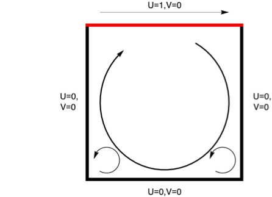

We decided to change our project to a different fluid mechanics problem that shows the movement of particles within a fluid when an external force is applied to it.
We are modeling a liquid in a box with a sliding lid on top. Theoretically, if the lid is slid to the right, the shearing force should move the liquid in contact with the lid to the right, which in turn moves the liquid below it, creating a spiraling effect. We want to model this scenario using navier-stokes equations and equation of continuity.
Navier-Stokes Equations and Equation of Continuity
Navier-Stokes equations describe the relations among velocity, pressure, temperature, and density of a moving fluid. It uses conservation of momentum and equates the net momentum change within a volume of fluid and the net momentum flux through the volume's surface.
The equations in Cartesian coordinates are:
$$\rho (\frac{\partial{u}}{\partial{t}} + u\frac{\partial{u}}{\partial{x}} +v\frac{\partial{u}}{\partial{y}} + w \frac{\partial{u}}{\partial{z}}) = -\frac{\partial{p}}{\partial{x}} + \mu(\frac{\partial{u}}{\partial{x^2}} + \frac{\partial{u}}{\partial{y^2}} + \frac{\partial{u}}{\partial{z^2}}) + \rho g_x$$
$$\rho (\frac{\partial{v}}{\partial{t}} + u\frac{\partial{v}}{\partial{x}} +v\frac{\partial{v}}{\partial{y}} + w \frac{\partial{v}}{\partial{z}}) = -\frac{\partial{p}}{\partial{y}} + \mu(\frac{\partial{v}}{\partial{x^2}} + \frac{\partial{v}}{\partial{y^2}} + \frac{\partial{v}}{\partial{z^2}}) + \rho g_y$$
$$\rho (\frac{\partial{w}}{\partial{t}} + u\frac{\partial{w}}{\partial{x}} +v\frac{\partial{w}}{\partial{y}} + w \frac{\partial{w}}{\partial{z}}) = -\frac{\partial{p}}{\partial{z}} + \mu(\frac{\partial{w}}{\partial{x^2}} + \frac{\partial{w}}{\partial{y^2}} + \frac{\partial{w}}{\partial{z^2}}) + \rho g_z$$
where rho is density, u is the x-component of velocity, v is the y-component, and w is the z-component, and p is pressure.
Continuity equation is:
$$\frac{\partial{u}}{\partial{x}} + \frac{\partial{v}}{\partial{y}} + \frac{\partial{w}}{\partial{z}} = 0$$
Application to the Liquid in Box Problem
Navier-Stokes equations coupled with the continuity equation allows us to solve for the velocity profile in a fluid dynamics scenario.
In our situation, we have a 2-d box, so we don't consider the z-axis. Let (0, 0) be the bottom left corner and (L, W) the top right corner. If we assume steady state (remove time dependent terms) and remove z-velocities,
$$\rho (u\frac{\partial{u}}{\partial{x}} +v\frac{\partial{u}}{\partial{y}}) = -\frac{\partial{p}}{\partial{x}} + \mu(\frac{\partial{u}}{\partial{x^2}} + \frac{\partial{u}}{\partial{y^2}}) + \rho g_x$$
$$\rho (u\frac{\partial{v}}{\partial{x}} +v\frac{\partial{v}}{\partial{y}}) = -\frac{\partial{p}}{\partial{y}} + \mu(\frac{\partial{v}}{\partial{x^2}} + \frac{\partial{v}}{\partial{y^2}}) + \rho g_y$$
$$\frac{\partial{u}}{\partial{x}} + \frac{\partial{v}}{\partial{y}} = 0$$
We have boundary conditions:
u(0,y)=u(x,0)=0
u(x,1)=1
v(0,y)=v(1,y)=v(x,0)=v(x,1)=0
Solving these PDEs, we can solve for the x- and y- velocities at every point. If we divide the box into a grid of points, we can calculate the velocity at every point for each time interval. We expect this behavior:

Solving PDEs
We will solve PDEs using Newton's method.
Rendering
There has been an important change in framework used. We decided against using GLSL for CPU based calculation passed into the shader as texture. This would make it easier for us to debug. Using Unity instead of OpenGL will also open up the possibility of integrating it into a game, which increases the longevity of the project after this semester.
Progress
So far, we have set up a scene in Unity with basic quad mesh attached with unlit texture shader. We wrote the first implementation of the code that takes density and velocity of the discretized fluid and outputs into the texture the visualization. We also wrote out the equations we need to solve at each time step.
In the next week we need to implement a method to solve the PDEs from Navier-Stokes and continuity equations to calculate density and velocity and also setup a scene to test the implementation. In the week after, we will prepare for the presentation and come up with possibly more scenes to demo.